卒業研究課題
最初のページ
発表スライド
自作アニメーション
Reduced Motion Media Query
参考サイト
あとがき
About me...
 CSS アニメーション 学籍番号 1901010244
発表スライド
自作アニメーション
Reduced MotionMedia Query
参考サイト
あとがき
About me...
上記のボタンには【transition】を使用しています。